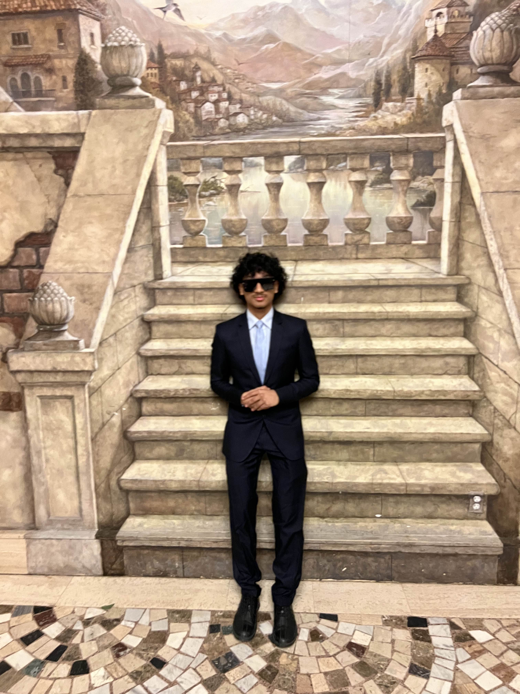

Welcome to Asfis Portfolio Website
As a dedicated and enthusiastic second-year Computer Science student at
the University of Windsor, I am passionate about coding, web development,
and game development. My technical skills are complemented by my love for
the outdoors, where I enjoy spending my free time, as well as my
appreciation for relaxing indoors. I pride myself on being social and easy
to get along with, making it effortless to build strong professional
relationships. I am eager to leverage my knowledge and experience in a
collaborative environment, driving innovation and excellence in every project
I undertake.
